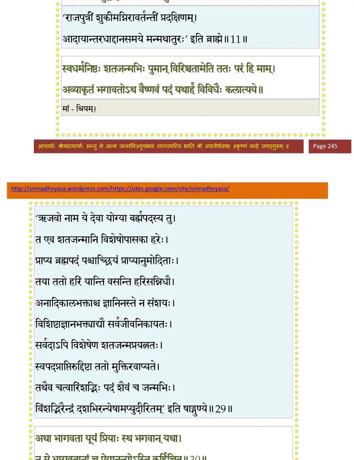
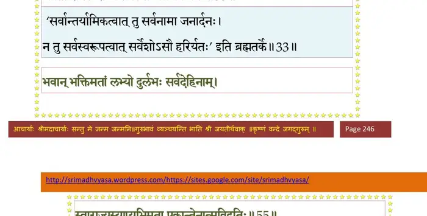
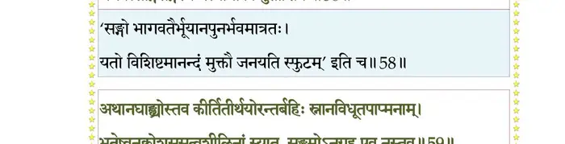
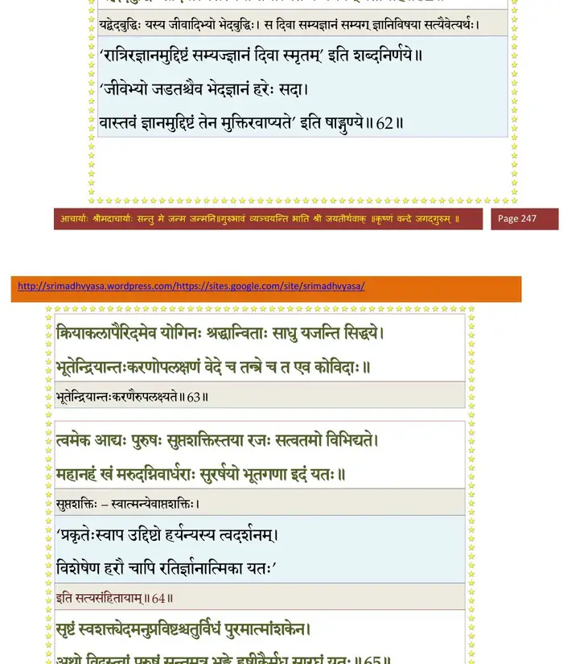
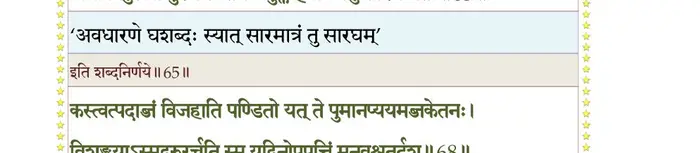
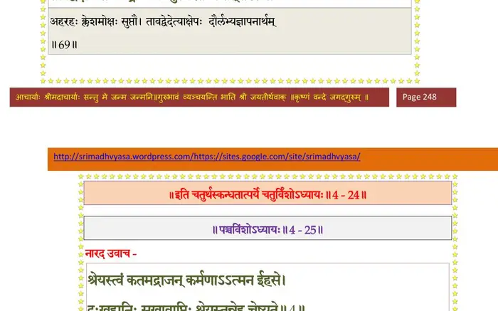

स्कन्ध 4 · अध्याय 24
श्लोक १
मैत्रेय उवाच–
विजिताश्वोऽथ राजाऽऽसीत् पृथुपुत्रः पृथुश्रवाः ।
यवीयेभ्योऽददत् काष्ठा भ्रातृभ्यो भ्रातृवत्सलः।। १ ।।
विजिताश्वोऽथ राजाऽऽसीत् पृथुपुत्रः पृथुश्रवाः ।
यवीयेभ्योऽददत् काष्ठा भ्रातृभ्यो भ्रातृवत्सलः।। १ ।।
श्लोक २
हर्यक्षायादिशत् प्राचीं धूम्रकेशाय दक्षिणाम् ।
प्रतीचीं वृकसंज्ञाय तुर्यां द्रविणसे विभुः।। २ ।।
प्रतीचीं वृकसंज्ञाय तुर्यां द्रविणसे विभुः।। २ ।।
श्लोक ३
अन्तर्धानगतिं शक्राल्लब्ध्वाऽन्तर्धानसज्ज्ञिज्ञितः ।
अपत्यत्रयमाधत्त शिखण्डिन्यां सुसम्मतम्।। ३ ।।
अपत्यत्रयमाधत्त शिखण्डिन्यां सुसम्मतम्।। ३ ।।
श्लोक ४
पावकः पवमानश्च शुचिरित्यग्नयः पुरा ।
वसिष्ठशापादुत्पन्नाः पुनर्योगगतिं गताः।। ४ ।।
वसिष्ठशापादुत्पन्नाः पुनर्योगगतिं गताः।। ४ ।।
श्लोक ५
अन्तर्धानो नभस्वत्यां हविर्धानमविन्दत ।
य इन्द्रमश्वहर्तारं विद्वानपि न जघि्नवान्।। ५ ।।
य इन्द्रमश्वहर्तारं विद्वानपि न जघि्नवान्।। ५ ।।
श्लोक ६
राज्ञां वृत्तिकरादानं दण्डशुल्कादि दारुणम् ।
मन्यमानो दीर्घसत्रव्याजेन विससर्ज ह।। ६ ।।
मन्यमानो दीर्घसत्रव्याजेन विससर्ज ह।। ६ ।।
श्लोक ७
तत्रापि हंसं पुरुषं परमात्मानमात्मदृक् ।
यजंस्तल्लोकतामाप परमेण समाधिना।। ७ ।।
यजंस्तल्लोकतामाप परमेण समाधिना।। ७ ।।
श्लोक ८
हविर्धानाद्धविर्धानी विदुरासूत षट् सुतान् ।
बर्हिष्मन्तं गयं शुक्लं कृष्णं सत्यं जितव्रतम्।। ८ ।।
बर्हिष्मन्तं गयं शुक्लं कृष्णं सत्यं जितव्रतम्।। ८ ।।
श्लोक ९
बर्हिष्मत् तु महाभागो हाविर्धानिः प्रजापतिः ।
क्रियाकाण्डेषु निष्णातो योगेषु च कुरूद्वह।। ९ ।।
क्रियाकाण्डेषु निष्णातो योगेषु च कुरूद्वह।। ९ ।।
श्लोक १०
यस्येदं देवयजनमनुयज्ञं वितन्वतः ।
प्राचीनाग्रैः कुशैरासीदास्तृतं वसुधातलम्।। १० ।।
प्राचीनाग्रैः कुशैरासीदास्तृतं वसुधातलम्।। १० ।।
श्लोक ११
सामुद्रीं देवदेवोक्तामुपयेमे शतद्रुतिम् ।
यां वीक्ष्य चारुसर्वाङ्गीं किशोरीं सुष्ट्वलङ्कृताम्।। ११ ।।
यां वीक्ष्य चारुसर्वाङ्गीं किशोरीं सुष्ट्वलङ्कृताम्।। ११ ।।
श्लोक १२
परिक्रमन्तीमुद्वाहे चकमेऽग्निः शुकीमिव ।
विबुधासुरगन्धर्वमुनिसिद्धमहोरगाः ।
विजिताः स्युर्यया दिक्षु क्वणयन्त्यैव नूपुरैः।। १२ ।।
विबुधासुरगन्धर्वमुनिसिद्धमहोरगाः ।
विजिताः स्युर्यया दिक्षु क्वणयन्त्यैव नूपुरैः।। १२ ।।
भागवततात्पर्यनिर्णय

श्लोक १३
प्राचीनबर्हिषः पुत्राः शतद्रुत्यां दशाभवन् ।
तुल्यनामव्रताः सर्वे वेदस्नाताः प्रचेतसः।। १३ ।।
तुल्यनामव्रताः सर्वे वेदस्नाताः प्रचेतसः।। १३ ।।
श्लोक १४
पित्राऽऽदिष्टाः प्रजासर्गे तपसेऽर्णवमाविशन् ।
दशवर्षसहस्राणि तपसाऽऽर्चंस्तपस्विनः।। १४ ।।
दशवर्षसहस्राणि तपसाऽऽर्चंस्तपस्विनः।। १४ ।।
श्लोक १५
यदुक्तं पथि दृष्टेन गिरिशेन प्रसीदता ।
तद् ध्यायन्तो जपन्तश्च पूजयन्तश्च संयताः।। १५ ।।
तद् ध्यायन्तो जपन्तश्च पूजयन्तश्च संयताः।। १५ ।।
श्लोक १६
विदुर उवाच–
प्रचेतसां गिरित्रेण यथाऽऽसीत् पथि सङ्गमः ।
यद्वाऽप्याह हरः प्रीतस्तन्नो ब्रह्मन् वदार्थवत्।। १६ ।।
प्रचेतसां गिरित्रेण यथाऽऽसीत् पथि सङ्गमः ।
यद्वाऽप्याह हरः प्रीतस्तन्नो ब्रह्मन् वदार्थवत्।। १६ ।।
श्लोक १७
सङ्गमः खलु विप्रर्षे शिवेन हि शरीरिणाम् ।
दुर्लभो मुनयो दध्युरसङ्गाः यमभीप्सितम्।। १७ ।।
दुर्लभो मुनयो दध्युरसङ्गाः यमभीप्सितम्।। १७ ।।
श्लोक १८
आत्मारामोऽपि यस्त्वस्य लोककल्पस्य राधसे ।
शक्त्या युक्तो विचरति घोरया भगवान् भवः।। १८ ।।
शक्त्या युक्तो विचरति घोरया भगवान् भवः।। १८ ।।
श्लोक १९
मैत्रेय उवाच–
प्रचेतसः पितुर्वाक्यं शिरसाऽऽधाय साधवः ।
दिशं प्रतीचीं प्रययुस्तपस्यादृतचेतसः।। १९ ।।
प्रचेतसः पितुर्वाक्यं शिरसाऽऽधाय साधवः ।
दिशं प्रतीचीं प्रययुस्तपस्यादृतचेतसः।। १९ ।।
श्लोक २०
समुद्रमुप विस्तीर्णमपश्यन् सुमहत् सरः ।
महन्मन इव स्वच्छं प्रसन्नसलिलाशयम्।। २० ।।
महन्मन इव स्वच्छं प्रसन्नसलिलाशयम्।। २० ।।
श्लोक २१
नीलरक्तोत्पलाम्भोजकह्लारेन्दीवराकरम् ।
हंससारसचक्राह्वकारण्डवनिकूजितम्।। २१ ।।
हंससारसचक्राह्वकारण्डवनिकूजितम्।। २१ ।।
श्लोक २२
मत्तभ्रमरसौस्वर्यहृष्टरोमलताङ्घ्रिपम् ।
पद्मकोशरजो दिक्षु विक्षिपत्पवनोत्सवम्।। २२ ।।
पद्मकोशरजो दिक्षु विक्षिपत्पवनोत्सवम्।। २२ ।।
श्लोक २३
तत्र गान्धर्वमाकर्ण्य दिव्यमार्गमनोहरम् ।
विसिस्मिरे राजपुत्रा मृदङ्गपणवाद्यवत्।। २३ ।।
विसिस्मिरे राजपुत्रा मृदङ्गपणवाद्यवत्।। २३ ।।
श्लोक २४
तर्ह्येव सरसस्तस्मान्निष्क्रामन्तं सहानुगम् ।
उपगीयमानममरप्रवरं विबुधानुगैः।। २४ ।।
उपगीयमानममरप्रवरं विबुधानुगैः।। २४ ।।
श्लोक २५
तप्तहेमनिकर्षाभं शितिकण्ठं त्रिलोचनम् ।
प्रसादसुमुखं वीक्ष्य प्रणेमुर्जातकौतुकाः।। २५ ।।
प्रसादसुमुखं वीक्ष्य प्रणेमुर्जातकौतुकाः।। २५ ।।
श्लोक २६
स तान् प्रपन्नार्तिहरो भगवान् धर्मवत्सलः ।
धर्मज्ञान् शीलसम्पन्नान् प्रीतान् प्रीत उवाच ह।। २६ ।।
धर्मज्ञान् शीलसम्पन्नान् प्रीतान् प्रीत उवाच ह।। २६ ।।
श्लोक २७
रुद्र उवाच –
यूयं बर्हिषदः पुत्रा विदितं वश्चिकीर्षितम् ।
अनुग्रहाय भद्रं व एवं मे दर्शनं कृतम्।। २७ ।।
यूयं बर्हिषदः पुत्रा विदितं वश्चिकीर्षितम् ।
अनुग्रहाय भद्रं व एवं मे दर्शनं कृतम्।। २७ ।।
श्लोक २८
यः परस्तमसः साक्षात् त्रिगुणाज्जीवसञ्ज्ञितात् ।
भगवन्तं वासुदेवं प्रपन्नः स प्रियो हि मे।। २८ ।।
भगवन्तं वासुदेवं प्रपन्नः स प्रियो हि मे।। २८ ।।
श्लोक ३०
स्वधर्मनिष्ठः शतजन्मभिः पुमान् विरिञ्चतामेति ततः परं हि माम् ।
अव्याकृतं भागवतोऽथ वैष्णवं पदं यथाऽहं विविधैः कलात्यये।।
अथ भागवता यूयं प्रियाः स्थ भगवान् यथा ।
न मे भागवतानां च प्रेयानन्योऽस्ति कर्हिचित्।। ३० ।।
अव्याकृतं भागवतोऽथ वैष्णवं पदं यथाऽहं विविधैः कलात्यये।।
अथ भागवता यूयं प्रियाः स्थ भगवान् यथा ।
न मे भागवतानां च प्रेयानन्योऽस्ति कर्हिचित्।। ३० ।।
भागवततात्पर्यनिर्णय
श्लोक ३१
इदं विविक्तं जप्तव्यं पवित्रं मङ्गलं परम् ।
निःश्रेयसकरं चापि श्रूयतां यद् वदामि वः।। ३१ ।।
निःश्रेयसकरं चापि श्रूयतां यद् वदामि वः।। ३१ ।।
श्लोक ३२
मैत्रेय उवाच –
इत्यनुक्रोशहृदयो भगवानाह ताञ्छिवः ।
बद्धाञ्जलीन् राजपुत्रान् नारायणपरो वचः।। ३२ ।।
इत्यनुक्रोशहृदयो भगवानाह ताञ्छिवः ।
बद्धाञ्जलीन् राजपुत्रान् नारायणपरो वचः।। ३२ ।।
श्लोक ३३
रुद्र उवाच –
जितं व आत्मविद्धुर्याः स्वस्तये स्वस्तिरस्तु वः ।
भवतां राधसे राध्यं सर्वस्मा आत्मने नमः।। ३३ ।।
जितं व आत्मविद्धुर्याः स्वस्तये स्वस्तिरस्तु वः ।
भवतां राधसे राध्यं सर्वस्मा आत्मने नमः।। ३३ ।।
भागवततात्पर्यनिर्णय

श्लोक ३४
नमः पङ्कजनाभाय भूतसूक्ष्मेन्द्रियात्मने ।
वासुदेवाय शान्ताय कूटस्थाय स्वरोचिषे।। ३४ ।।
वासुदेवाय शान्ताय कूटस्थाय स्वरोचिषे।। ३४ ।।
श्लोक ३५
सङ्कर्षणाय सूक्ष्माय दुरन्तायान्तकाय च ।
नमो विश्वप्रबोधाय प्रद्युम्नायान्तरात्मने।। ३५ ।।
नमो विश्वप्रबोधाय प्रद्युम्नायान्तरात्मने।। ३५ ।।
श्लोक ३६
नमो नमोऽनिरुद्धाय हृषीकेशेन्द्रियात्मने ।
नमः परमहंसाय पूर्णाय निभृतात्मने।। ३६ ।।
नमः परमहंसाय पूर्णाय निभृतात्मने।। ३६ ।।
श्लोक ३७
स्वर्गापवर्गद्वाराय नित्यं शुचिषदे नमः ।
नमो हिरण्यवीर्याय चातुर्होत्राय तन्तवे।। ३७ ।।
नमो हिरण्यवीर्याय चातुर्होत्राय तन्तवे।। ३७ ।।
श्लोक ३८
नम ऊर्ज इषे त्रय्याः पतये यज्ञरेतसे ।
तृप्तिदाय च जीवानां नमः सर्वरसात्मने।। ३८ ।।
तृप्तिदाय च जीवानां नमः सर्वरसात्मने।। ३८ ।।
श्लोक ३९
सर्वसत्त्वात्मदेहाय विशेषाय स्थवीयसे ।
नमस्त्रैलोक्यपालाय सहओजोबलाय च।। ३९ ।।
नमस्त्रैलोक्यपालाय सहओजोबलाय च।। ३९ ।।
श्लोक ४०
अर्थलिङ्गाय नभसे नमोऽन्तर्बहिरात्मने ।
नमः पुण्याय श्लोकाय अमुष्मै भूरिवर्चसे।। ४० ।।
नमः पुण्याय श्लोकाय अमुष्मै भूरिवर्चसे।। ४० ।।
श्लोक ४१
प्रवृत्ताय निवृत्ताय पितृदेवाय कर्मणे ।
नमो धर्मविपाकाय मृत्यवे दुःखदाय च।। ४१ ।।
नमो धर्मविपाकाय मृत्यवे दुःखदाय च।। ४१ ।।
श्लोक ४२
नमस्त आशिषामीश मनवे कारणात्मने ।
नमो धर्माय बृहते कृष्णायाकुण्ठमेधसे।। ४२ ।।
नमो धर्माय बृहते कृष्णायाकुण्ठमेधसे।। ४२ ।।
श्लोक ४३
पुरुषाय पुराणाय सांख्ययोगेश्वराय च ।
शक्तित्रयसमेताय मीढुषेऽहंकृतात्मने।। ४३ ।।
शक्तित्रयसमेताय मीढुषेऽहंकृतात्मने।। ४३ ।।
श्लोक ४४
चेतआकूतिरूपाय नमो वाचोविभूतये ।
दर्शनं नो दिदृक्षूणां देहि भागवतार्चितम्।। ४४ ।।
दर्शनं नो दिदृक्षूणां देहि भागवतार्चितम्।। ४४ ।।
श्लोक ४५
रूपं प्रियतमं स्वानां सर्वेन्द्रियगुणाञ्जनम् ।
स्निग्धप्रावृड्घनश्यामं सर्वसौन्दर्यसङ्ग्रहम्।। ४५ ।।
स्निग्धप्रावृड्घनश्यामं सर्वसौन्दर्यसङ्ग्रहम्।। ४५ ।।
श्लोक ४६
चार्वायतचतुर्बाहुं सुजातरुचिराननम् ।
पद्मकोशपलाशाक्षं सुन्दरभ्रु सुनासिकम्।। ४६ ।।
पद्मकोशपलाशाक्षं सुन्दरभ्रु सुनासिकम्।। ४६ ।।
श्लोक ४७
सुद्विजं सुकपोलास्यं समकर्णविभूषितम् ।
प्रीतिप्रहसितापाङ्गमलकैरुपशोभितम्।। ४७ ।।
प्रीतिप्रहसितापाङ्गमलकैरुपशोभितम्।। ४७ ।।
श्लोक ४८
लसत्पङ्कजकिञ्जल्कदुकूलं मृष्टकुण्डलम् ।
स्फुरत्किरीटवलयहारनूपुरमेखलम्।। ४८ ।।
स्फुरत्किरीटवलयहारनूपुरमेखलम्।। ४८ ।।
श्लोक ४९
शङ्खचक्रगदापद्ममालामण्युत्तमर्द्धिमत् ।
सिंहस्कन्धमुरो बिभ्रत् सौभगग्रीवकौस्तुभम्।। ४९ ।।
सिंहस्कन्धमुरो बिभ्रत् सौभगग्रीवकौस्तुभम्।। ४९ ।।
श्लोक ५०
श्रियाऽनपायिन्याऽऽक्षिप्तं निकषाश्मोरसोल्लसत् ।
पूररेचकसंविग्नवलिमत्पल्लवोदरम्।। ५० ।।
पूररेचकसंविग्नवलिमत्पल्लवोदरम्।। ५० ।।
श्लोक ५१
प्रतिसंक्रामयद् विश्वं नाभ्याऽऽवर्तगभीरया ।
श्यामश्रोण्यधिरोचिष्णुदुकूलस्वर्णमेखलम् ।
समचार्वङ्घ्रिजङ्घोरुनिम्नजानुसुदर्शनम्।। ५१ ।।
श्यामश्रोण्यधिरोचिष्णुदुकूलस्वर्णमेखलम् ।
समचार्वङ्घ्रिजङ्घोरुनिम्नजानुसुदर्शनम्।। ५१ ।।
श्लोक ५२
पदा शरत्पद्मपलाशरोचिषा नखद्युभिर्नोतुरघं विधुन्वता ।
प्रदर्शय स्वीयमपास्तसाध्वसं पदं पुरोमार्गगुरुस्तमोजुषाम्।। ५२ ।।
प्रदर्शय स्वीयमपास्तसाध्वसं पदं पुरोमार्गगुरुस्तमोजुषाम्।। ५२ ।।
श्लोक ५३
एतद् रूपमनुध्येयमात्मशुद्धिमभीप्सताम् ।
यद्भक्तियोगोऽभयदः स्वधर्ममनुतिष्ठताम्।। ५३ ।।
यद्भक्तियोगोऽभयदः स्वधर्ममनुतिष्ठताम्।। ५३ ।।
श्लोक ५४
भवान् भक्तिमतां लभ्यो दुर्लभः सर्वदेहिनाम् ।
स्वाराज्यस्याप्यभिमता एकान्तेनात्मविद्गतिः।। ५४ ।।
स्वाराज्यस्याप्यभिमता एकान्तेनात्मविद्गतिः।। ५४ ।।
श्लोक ५५
त्वां दुराराध्यमाराध्य सतामपि दुरापया ।
एकान्तभक्त्या को वाञ्छेत् पादमूलं विना बहिः।। ५५ ।।
एकान्तभक्त्या को वाञ्छेत् पादमूलं विना बहिः।। ५५ ।।
भागवततात्पर्यनिर्णय
श्लोक ५६
यत्र निर्विष्टमरणं कृतान्तो नावमन्यते ।
विश्वं विष्टम्भयन् वीर्यशौर्यविस्फुरितभ्रुवा।। ५६ ।।
विश्वं विष्टम्भयन् वीर्यशौर्यविस्फुरितभ्रुवा।। ५६ ।।
श्लोक ५७
क्षणार्धेनाऽपि तुलये न स्वर्गं नापुनर्भवम् ।
भगवत्सङ्गिसङ्गस्य मर्त्यानां किमुताशिषः।। ५७ ।।
भगवत्सङ्गिसङ्गस्य मर्त्यानां किमुताशिषः।। ५७ ।।
भागवततात्पर्यनिर्णय

श्लोक ५८
अथानघाङ्घ्र्योस्तव कीर्तितीर्थयोरन्तर्बहिः स्नानविधूतपाप्मनाम् ।
भूतेष्वनुक्रोशसुसत्त्वशीलिनां स्यात् सङ्गमोऽनुग्रह एष नस्तव।।५८।।
भूतेष्वनुक्रोशसुसत्त्वशीलिनां स्यात् सङ्गमोऽनुग्रह एष नस्तव।।५८।।
भागवततात्पर्यनिर्णय
श्लोक ५९
न यस्य चित्तं बहिरर्थविभ्रमं मनोगुहायां च निविष्टमाविशेत् ।
यद्भक्तियोगानुगृहीतमञ्जसा मुनिर्विचष्टे ननु तत्र ते पदम्।। ५९ ।।
यद्भक्तियोगानुगृहीतमञ्जसा मुनिर्विचष्टे ननु तत्र ते पदम्।। ५९ ।।
श्लोक ६०
यत्रेदं व्यज्यते विश्वं विश्वस्मिन्नवभाति यत् ।
न त्वं ब्रह्म परं ज्योतिराकाशमिव विस्तृतम्।। ६० ।।
न त्वं ब्रह्म परं ज्योतिराकाशमिव विस्तृतम्।। ६० ।।
भागवततात्पर्यनिर्णय
श्लोक ६३
यो माययेदं पुरुरूपयाऽसृजद् बिभर्ति भूयः क्षपयेदविक्रियः ।
यद्भेदबुद्धिः सदिवाऽऽत्मसंस्थया तमात्मतन्त्रं भगवन् प्रतीमहि ।।६१
क्रियाकलापैरिदमेव योगिनः श्रद्धान्विताः साधु यजन्ति सिद्धये ।
भूतेन्द्रियान्तःकरणोपलक्षणं वेदे च तन्त्रे च त एव कोविदाः।।६२
त्वमेक आद्यः पुरुषः सुप्तशक्तिस्तया रजः सत्त्वतमो विभिद्यते ।
महानहं खं मरुदग्निवार्धराः सुरर्षयो भूतगणा इदं यतः।। ६३ ।।
यद्भेदबुद्धिः सदिवाऽऽत्मसंस्थया तमात्मतन्त्रं भगवन् प्रतीमहि ।।६१
क्रियाकलापैरिदमेव योगिनः श्रद्धान्विताः साधु यजन्ति सिद्धये ।
भूतेन्द्रियान्तःकरणोपलक्षणं वेदे च तन्त्रे च त एव कोविदाः।।६२
त्वमेक आद्यः पुरुषः सुप्तशक्तिस्तया रजः सत्त्वतमो विभिद्यते ।
महानहं खं मरुदग्निवार्धराः सुरर्षयो भूतगणा इदं यतः।। ६३ ।।
भागवततात्पर्यनिर्णय

श्लोक ६५
सृष्टं स्वशक्त्येदमनुप्रविश्य चतुर्विधं पुरमात्मांशकेन ।
अथो विदुस्त्वां पुरुषं सन्तमत्र भुङ्क्ते हृषीकैर्मधु सारघं यतः।। ६४
स एष लोकानतिचण्डवेगो विकर्षसि त्वं खलु कालयानः ।
भूतानि भूतैरनुमेयतत्त्वो घनावलीर्वायुरिवाविषह्यः।। ६५ ।।
अथो विदुस्त्वां पुरुषं सन्तमत्र भुङ्क्ते हृषीकैर्मधु सारघं यतः।। ६४
स एष लोकानतिचण्डवेगो विकर्षसि त्वं खलु कालयानः ।
भूतानि भूतैरनुमेयतत्त्वो घनावलीर्वायुरिवाविषह्यः।। ६५ ।।
भागवततात्पर्यनिर्णय

श्लोक ६६
प्रमत्तमुच्चैरितिकृत्यचिन्तया प्रवृद्धलोभं विषयेषु लालसम् ।
त्वमप्रमत्तः सहसाऽभिपद्यते क्षुल्लेलिहानोऽहिरिवाखुमन्तकः।। ६६ ।।
त्वमप्रमत्तः सहसाऽभिपद्यते क्षुल्लेलिहानोऽहिरिवाखुमन्तकः।। ६६ ।।
श्लोक ६७
कस्त्वत्पदाब्जं विजहाति पण्डितो यत् ते पुमानप्ययमब्जकेतनः ।
विशङ्कयाऽस्मद्गुरुरर्चति स्म यद् विनोपपत्तिं मनवश्चतुर्दश।। ६७ ।।
विशङ्कयाऽस्मद्गुरुरर्चति स्म यद् विनोपपत्तिं मनवश्चतुर्दश।। ६७ ।।
भागवततात्पर्यनिर्णय
श्लोक ६८
यत्स्पृष्टोऽहरहर्मुक्तक्लेशः शेतेऽमृताम्बुधौ ।
तावद् वेदाथ तत् तेऽङ्घ्रिं जनो नु स्मरते च तत्।। ६८ ।।
तावद् वेदाथ तत् तेऽङ्घ्रिं जनो नु स्मरते च तत्।। ६८ ।।
भागवततात्पर्यनिर्णय

श्लोक ६९
अथ त्वमसि नो ब्रह्मन् परमात्मन् विपश्चिताम् ।
विश्वं रुद्रभयध्वस्तमकुतश्चिद्भया गतिः।। ६९ ।।
विश्वं रुद्रभयध्वस्तमकुतश्चिद्भया गतिः।। ६९ ।।
श्लोक ७०
इदं जपत भद्रं वो विस्रभ्य नृपनन्दनाः ।
स्वधर्ममनुतिष्ठन्तो भगवत्यर्पिताशयाः।। ७० ।।
स्वधर्ममनुतिष्ठन्तो भगवत्यर्पिताशयाः।। ७० ।।
श्लोक ७१
तमेवात्मानमात्मस्थं सर्वभूतेष्ववस्थितम् ।
पूजयध्वं गृणन्तश्च ध्यायन्तश्चासकृद्धरिम्।। ७१ ।।
पूजयध्वं गृणन्तश्च ध्यायन्तश्चासकृद्धरिम्।। ७१ ।।
श्लोक ७२
योगादेशमुपासाद्य धारयन्तो मुनिव्रताः ।
समाहितधियः सर्वे एतदभ्यसनाहताः।। ७२ ।।
समाहितधियः सर्वे एतदभ्यसनाहताः।। ७२ ।।
श्लोक ७३
इदमाह पुराऽस्माकं भगवान् विश्वसृक्पतिः ।
भृग्वादीनामात्मजानां सिसृक्षुः संसिसृक्षताम्।। ७३ ।।
भृग्वादीनामात्मजानां सिसृक्षुः संसिसृक्षताम्।। ७३ ।।
श्लोक ७४
ते वयं चोदिताः सर्वे प्रजासर्गे प्रजेश्वराः ।
अनेन ध्वस्ततमसः सिसृक्ष्म विविधाः प्रजाः।। ७४ ।।
अनेन ध्वस्ततमसः सिसृक्ष्म विविधाः प्रजाः।। ७४ ।।
श्लोक ७५
अथेदं नित्यदा युक्तो जपन्नवहितः पुमान् ।
अचिराच्छ्रेय आप्नोति वासुदेवपरायणः।। ७५ ।।
अचिराच्छ्रेय आप्नोति वासुदेवपरायणः।। ७५ ।।
श्लोक ७६
श्रेयसामिह सर्वेषां ज्ञानं निःश्रेयसं स्मृतम् ।
सुखं तरति दुष्पारं ज्ञाननौर्व्यसनार्णवम्।। ७६ ।।
सुखं तरति दुष्पारं ज्ञाननौर्व्यसनार्णवम्।। ७६ ।।
श्लोक ७७
य इदं श्रद्धया युक्तो मद्गीतं भगवत्स्तवम् ।
अधीयानो दुराराध्यं हरिमाराधयत्यसौ।। ७७ ।।
अधीयानो दुराराध्यं हरिमाराधयत्यसौ।। ७७ ।।
श्लोक ७८
विन्दते पुरुषोऽमुष्माद् यद् यदिच्छति सत्वरम् ।
मद्गीतगीतात् सुप्रीताच्छे्रयसामेकवल्लभात्।। ७८ ।।
मद्गीतगीतात् सुप्रीताच्छे्रयसामेकवल्लभात्।। ७८ ।।
श्लोक ७९
य इदं कल्य उत्थाय प्राञ्जलिः श्रद्धयाऽन्वितः ।
शृणुयाच्छ्रावयेन्मर्त्यो मुच्यते कर्मबन्धनैः।। ७९ ।।
शृणुयाच्छ्रावयेन्मर्त्यो मुच्यते कर्मबन्धनैः।। ७९ ।।
श्लोक ८०
गीतं मयेदं नरदेवनन्दनाः परस्य पुंसः परमात्मनः स्तवम् ।
जपन्त एकाग्रधियस्तपो महच्चरध्वमन्ते तत आप्स्यथेप्सितम्।।८०।।
जपन्त एकाग्रधियस्तपो महच्चरध्वमन्ते तत आप्स्यथेप्सितम्।।८०।।
।। इति श्रीमद्भागवते चतुर्थस्कन्धे चतुर्विंशोऽध्यायः ।।